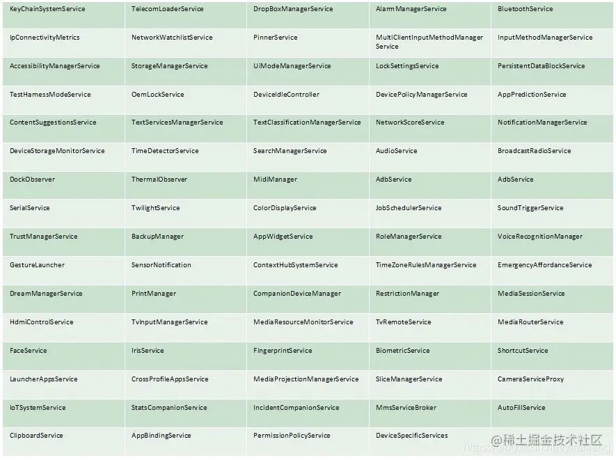

system_server 进程承载着整个framework的核心服务，例如创建 ActivityManagerService、PowerManagerService、DisplayManagerService、PackageManagerService、WindowManagerService、LauncherAppsService等80多个核心系统服务。这些服务以不同的线程方式存在于system_server这个进程中。
SystemServer的源码路径为 /frameworks/base/services/java/com/android/server/SystemServer.java,我们从这个类的main方法开始看起：
public static void main(String[] args) {
new SystemServer().run();
}
main方法里创建了一个SystemServer实例，并调用了run方法。SystemServer的构造方法里只是一些简单的变量初始化，我们直接从run方法继续阅读。
private void run() {
try {
...
//准备主线程lopper
android.os.Process.setThreadPriority(
android.os.Process.THREAD_PRIORITY_FOREGROUND);
android.os.Process.setCanSelfBackground(false);
Looper.prepareMainLooper();
Looper.getMainLooper().setSlowLogThresholdMs(
SLOW_DISPATCH_THRESHOLD_MS, SLOW_DELIVERY_THRESHOLD_MS);
// 加载libandroid_servers.so库
System.loadLibrary("android_servers");
//检测上次关机过程是否失败，这个调用可能不会返回
performPendingShutdown();
//初始化系统上下文
createSystemContext();
//创建系统服务管理者--SystemServiceManager
mSystemServiceManager = new SystemServiceManager(mSystemContext);
mSystemServiceManager.setStartInfo(mRuntimeRestart,
mRuntimeStartElapsedTime, mRuntimeStartUptime);
//将mSystemServiceManager添加到本地服务中，至于什么是LocalServices，它有什么作用，
//以后再单独开一篇文章来讲解
LocalServices.addService(SystemServiceManager.class, mSystemServiceManager);
//为可以并行化的init任务准备线程池
SystemServerInitThreadPool.get();
} finally {
traceEnd(); // InitBeforeStartServices
}
// 在这里开始启动一系列服务了
try {
traceBeginAndSlog("StartServices");
// 启动引导服务
startBootstrapServices();
// 启动核心服务
startCoreServices();
// 启动其他服务
startOtherServices();
//停止init线程池
SystemServerInitThreadPool.shutdown();
} catch (Throwable ex) {
Slog.e("System", "******************************************");
Slog.e("System", "************ Failure starting system services", ex);
throw ex;
} finally {
traceEnd();
}
...
// 死循环执行
Looper.loop();
throw new RuntimeException("Main thread loop unexpectedly exited");
}
我们来关注以下几个重点方法：
createSystemContext
private void createSystemContext() {
//创建system_server进程的上下文信息
ActivityThread activityThread = ActivityThread.systemMain();
mSystemContext = activityThread.getSystemContext();
//设置主题
mSystemContext.setTheme(DEFAULT_SYSTEM_THEME);
//获取systemui上下文信息，并设置主题
final Context systemUiContext = activityThread.getSystemUiContext();
systemUiContext.setTheme(DEFAULT_SYSTEM_THEME);
}
在调用ActivityThread.systemMain方法时，这个过程会创建对象有ActivityThread，Instrumentation, ContextImpl，LoadedApk，Application。
为什么会要创建Application对象？就目前的源码来看，Application对象在systemserver进程并无实际作用，笔者只能猜测这是为将来的扩展做准备或者android版本迭代中的历史遗留代码。
startBootstrapServices
在这个方法中会启动系统的关键服务，这些服务是系统运行的基石。因为它们之间具有复杂的依赖关系，所以谷歌把它们放在一起初始化。
private void startBootstrapServices() {
// 尽早启动看门狗，这样我们在早期启动陷入死锁时就可以使system server崩溃重启。
final Watchdog watchdog = Watchdog.getInstance();
watchdog.start();
//启动Installer Service，这个Service 通过binder与installd进程通讯，负责apk安装相关的工作
Installer installer = mSystemServiceManager.startService(Installer.class);
//设备标识符策略服务
mSystemServiceManager.startService(DeviceIdentifiersPolicyService.class);
// 管理uri授权
mSystemServiceManager.startService(UriGrantsManagerService.Lifecycle.class);
//启动ActivityTaskManagerService和ActivityManagerService
ActivityTaskManagerService atm = mSystemServiceManager.startService(
ActivityTaskManagerService.Lifecycle.class).getService();
mActivityManagerService = ActivityManagerService.Lifecycle.startService(
mSystemServiceManager, atm);
mActivityManagerService.setSystemServiceManager(mSystemServiceManager);
mActivityManagerService.setInstaller(installer);
mWindowManagerGlobalLock = atm.getGlobalLock();
//电源管理器需要尽早启动，因为其他服务需要它。
mPowerManagerService = mSystemServiceManager.startService(PowerManagerService.class);
//启动热缓解服务，目的是在手机开始过热时进行有效的热缓解
mSystemServiceManager.startService(ThermalManagerService.class);
// Now that the power manager has been started, let the activity manager
// initialize power management features.
mActivityManagerService.initPowerManagement();
//启动系统恢复服务，负责协调设备上与恢复有关的功能。
mSystemServiceManager.startService(RecoverySystemService.class);
//到这里为止，系统启动的必须服务已经加载完毕
RescueParty.noteBoot(mSystemContext);
//管理LED和屏幕背光，我们需要它来显示
mSystemServiceManager.startService(LightsService.class);
//管理显示设备
//在package manager 启动之前，需要启动display manager 提供display metrics
mDisplayManagerService = mSystemServiceManager.startService(DisplayManagerService.class);
//只有DisplayManagerService会对PHASE_WAIT_FOR_DEFAULT_DISPLAY做处理
//目的是在初始化包管理器之前，首先需要获取一个默认的显示设备
mSystemServiceManager.startBootPhase(SystemService.PHASE_WAIT_FOR_DEFAULT_DISPLAY);
// 启动 package manager.
if (!mRuntimeRestart) {
MetricsLogger.histogram(null, "boot_package_manager_init_start",
(int) SystemClock.elapsedRealtime());
}
try {
Watchdog.getInstance().pauseWatchingCurrentThread("packagemanagermain");
mPackageManagerService = PackageManagerService.main(mSystemContext, installer,
mFactoryTestMode != FactoryTest.FACTORY_TEST_OFF, mOnlyCore);
} finally {
Watchdog.getInstance().resumeWatchingCurrentThread("packagemanagermain");
}
mFirstBoot = mPackageManagerService.isFirstBoot();
mPackageManager = mSystemContext.getPackageManager();
//启动UserManager Service
mSystemServiceManager.startService(UserManagerService.LifeCycle.class);
//为系统进程设置应用程序实例并启动
mActivityManagerService.setSystemProcess();
//使用ActivityManager实例完成看门狗设置并监听是否重启
watchdog.init(mSystemContext, mActivityManagerService);
// DisplayManagerService needs to setup android.display scheduling related policies
// since setSystemProcess() would have overridden policies due to setProcessGroup
mDisplayManagerService.setupSchedulerPolicies();
//负责动态资源overlay
mSystemServiceManager.startService(new OverlayManagerService(mSystemContext, installer));
mSystemServiceManager.startService(new SensorPrivacyService(mSystemContext));
if (SystemProperties.getInt("persist.sys.displayinset.top", 0) > 0) {
// DisplayManager needs the overlay immediately.
mActivityManagerService.updateSystemUiContext();
LocalServices.getService(DisplayManagerInternal.class).onOverlayChanged();
}
//传感器服务需要访问包管理器服务、app ops服务和权限服务，
//因此我们在它们之后启动它。
//在单独的线程中启动传感器服务。在使用它之前应该检查完成情况。
mSensorServiceStart = SystemServerInitThreadPool.get().submit(() -> {
TimingsTraceLog traceLog = new TimingsTraceLog(
SYSTEM_SERVER_TIMING_ASYNC_TAG, Trace.TRACE_TAG_SYSTEM_SERVER);
traceLog.traceBegin(START_SENSOR_SERVICE);
startSensorService();
traceLog.traceEnd();
}, START_SENSOR_SERVICE);
}
总结一下，引导服务有以下15个：
| 服务名称 | 描述 |
|---|---|
| Installer | 负责apk安装相关的工作 |
| DeviceIdentifiersPolicyService | 设备标识符策略服务 |
| UriGrantsManagerServiceUri | 授权管理 |
| ActivityTaskManagerService | 用于管理Activity及其容器(task, stacks, displays,... )的系统服务 |
| ActivityManagerService | 管理Activity的启动，调度等工作 |
| PowerManagerService | 负责协调设备上的电源管理功能 |
| ThermalManagerService | 热缓解服务 |
| RecoverySystemService | 负责协调设备上与恢复有关的功能 |
| LightsService | 管理LED和屏幕背光 |
| DisplayManagerService | 管理显示设备 |
| PackageManagerService | 主要负责APK、jar包的管理 |
| UserManagerService | 管理用户的系统服务 |
| OverlayManagerService | 负责动态资源overlay工作，具体请搜索android RRO技术 |
| SensorPrivacyService | 和传感器有关，具体作用不明 |
| SensorPrivacySere | 传感器服务 |
startCoreServices
private void startCoreServices() {
// 追踪电池充电状态和电量。需要LightService
mSystemServiceManager.startService(BatteryService.class);
//跟踪应用程序使用状态
mSystemServiceManager.startService(UsageStatsService.class);
mActivityManagerService.setUsageStatsManager(
LocalServices.getService(UsageStatsManagerInternal.class));
// 跟踪可更新的WebView是否处于就绪状态，并监视更新安装。
if (mPackageManager.hasSystemFeature(PackageManager.FEATURE_WEBVIEW)) {
traceBeginAndSlog("StartWebViewUpdateService");
mWebViewUpdateService = mSystemServiceManager.startService(WebViewUpdateService.class);
traceEnd();
}
//跟踪并缓存设备状态。
mSystemServiceManager.startService(CachedDeviceStateService.class);
// 跟踪在Binder调用中花费的cpu时间
mSystemServiceManager.startService(BinderCallsStatsService.LifeCycle.class);
// 跟踪handlers中处理messages所花费的时间。
mSystemServiceManager.startService(LooperStatsService.Lifecycle.class);
//管理apk回滚
mSystemServiceManager.startService(RollbackManagerService.class);
// 用于捕获bugreport,adb bugreport 命令调用的就是这个服务
mSystemServiceManager.startService(BugreportManagerService.class);
// 管理Gpu和Gpu驱动的服务
mSystemServiceManager.startService(GpuService.class);
}
总结一下，核心服务共计9个：
| 服务名称 | 描述 |
|---|---|
| BatteryService | 追踪电池充电状态和电量 |
| UsageStatsManagerInternal | 跟踪应用程序使用状态 |
| WebViewUpdateService | 跟踪可更新的WebView是否处于就绪状态，并监视更新安装。 |
| CachedDeviceStateService | 跟踪并缓存设备状态 |
| BinderCallsStatsService | 跟踪在Binder调用中花费的cpu时间 |
| LooperStatsService | 跟踪handlers中处理messages所花费的时间。 |
| RollbackManagerService | 管理apk回滚 |
| BugreportManagerService | 用于捕获bugreport |
| GpuService | 管理Gpu和Gpu驱动 |
startOtherServices
这个方法负责启动剩下的服务，共计有70多个，限于篇幅的原因，在此不再一一列举，贴一张从网上找到的图片大家简单的了解一下就行了：

需要注意的是在startOtherServices结尾处调用了AMS的systemReady方法，AMS的systemReady里有这样一条语句：
mAtmInternal.startHomeOnAllDisplays(currentUserId, "systemReady");
这条语句会启动如下的Intent:
Intent getHomeIntent() {
Intent intent = new Intent(mTopAction, mTopData != null ? Uri.parse(mTopData) : null);
intent.setComponent(mTopComponent);
intent.addFlags(Intent.FLAG_DEBUG_TRIAGED_MISSING);
if (mFactoryTest != FactoryTest.FACTORY_TEST_LOW_LEVEL) {
intent.addCategory(Intent.CATEGORY_HOME);
}
return intent;
}
注意到Intent.CATEGORY_HOME没，这意味着startHomeOnAllDisplays最终启动的是android的launcher app，android的启动已经进入了结尾。
至此，我们从按下电源键开始，到最终呈现launcher页面，整个启动流程做了一个简单的介绍。